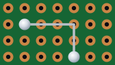
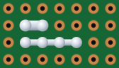
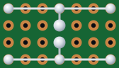
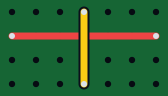
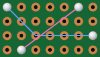
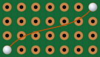

Two sides, six methods
A perfboard has two faces: the component side, where the parts sit, and the copper side (the solder side), with the pads, where the leads poke through and get soldered. What decides where a connection can go is whether it's bare or insulated:
- Bare connections (bent leads, solder bridges and bare wire) lie flat on the copper side. They're quick and tidy, but they can't cross anything.
- Insulated wire can cross whatever it likes. Jumpers usually go on the component side, through a hole at each end like a part; thin wire-wrap and enameled wire run straight from pad to pad on the copper side.
Most good boards use several methods. Here they are, simplest first.






1. Bent component leads
Most parts come with far more lead than they need. Instead of snipping it off, bend it flat against the copper side, run it to the next pad in the connection, and solder it there. It's free, strong and neat for hops of a few holes.
- Press the lead tight against the board with pliers, so it can't spring up and touch something else.
- The lead touches every pad it passes over. Keep those holes empty, or let them join the connection only if they belong to it.
- The catch: a part whose leads are woven into the wiring is hard to take out later. For parts you might swap, use separate wire.
Tip: keep your offcuts. Snipped resistor leads make perfect short links and solder-bridge cores.
2. Solder bridges
Two neighboring pads can be joined with solder alone. Tin both pads, then add a little more solder and draw it from one pad toward the other with the tip, so the two blobs meet and flow together. Bridges are perfect for joining a lead to the pad right next door.
For anything longer than two or three holes, lay a bare wire or a lead offcut along the pads and solder over it. A long trail of pure solder is brittle, carries current poorly, and is hard to make on single-sided boards, whose pads lift if you keep heating them.
The skill that makes a bridge on purpose makes one by accident, too. After soldering, check the gaps between neighboring pads that should not be joined, against a bright light.
3. Bare bus wire
Bare tinned copper wire is the backbone of most perfboard builds: the power and ground rails, and any long straight run. Lay it along a row of pads on the copper side and solder it at both ends, at every pad where something connects, and every few holes in between to hold it down.
- Use solid tinned wire, around 0.5 to 0.65 mm (24 to 22 AWG), or thicker for heavy currents.
- Straighten it first: clamp one end and pull the other firmly with pliers. It stretches a little and comes out dead straight and stiff.
- Bare wire can't cross anything. Plan the bus routes so they don't need to, and leave a free row between parallel buses.
4. Insulated jumpers
When a connection must cross another, it goes over the top: an insulated wire on the component side, through a hole at each end, soldered underneath like a component. Use solid-core wire (22 to 24 AWG): it bends to shape and stays there. Stranded wire frays as it goes through a hole, and a single stray strand can short to the next pad.
- Cut each jumper to length so it lies flat on the board, not in loops.
- Strip only enough to go through the board (3 to 4 mm), so no bare wire shows on top.
- Color-code: red for positive, black for ground, other colors for signals.
5. Wire-wrap wire
Thin 30 AWG wire-wrap wire (often called Kynar wire, after its insulation) is the secret weapon for dense digital boards. It's thin enough to run point to point on the copper side, from pad to pad, without fighting the parts, and its insulation doesn't melt back when you solder next to it.
- Strip about 5 mm with a wire-wrap stripper or a sharp blade, tin the end, and tack it to the pad.
- It's for signals: keep it under about half an amp, and use thicker wire for power.
6. Enameled wire
Magnet wire, the varnished copper wire inside transformers and coils, also works for fine point-to-point wiring and repairs. Solderable kinds have an enamel that burns off on a hot iron, so you can tin the end without stripping it. Not every enamel does, so try a piece first, and check each run with a meter afterwards: you can't see whether the enamel at the joint has really gone.
Which method where
| Method | Best for | Can cross? | Watch out for |
|---|---|---|---|
| Bent leads | Short hops next to a part | No | Hard to take the part out later |
| Solder bridge | Joining neighboring pads | No | Accidental bridges; brittle over long runs |
| Bare bus wire | Power and ground rails, long straight runs | No | Keep other wires a hole away |
| Insulated jumper | Connections that must cross | Yes | Use solid core, strip neatly |
| Wire-wrap wire | Dense signal wiring | Yes | Signals only: it's thin |
| Enameled wire | Fine wiring and repairs | Yes | Check the enamel solders, and test each run |
Which wire for which job
AWG numbers go down as wire gets thicker: 22 AWG is about 0.64 mm across, 24 AWG about 0.51 mm, and 30 AWG about 0.25 mm.
Wires that leave the board
Pots, jacks, switches, speakers and batteries usually sit off the board, on a panel or in the box, joined to it by flying leads. Those are the wires that break, so give them some care:
- Stranded wire, which survives being flexed where solid wire would snap. Twist the strands and tin the ends before soldering them.
- A connector where you can: screw terminals, or pin headers and plugs, so the board comes out without a soldering iron.
- Strain relief: anchor each wire before it reaches its joint, with a dab of hot glue or through a hole drilled big enough to thread it, so a tug pulls on the board and not on the solder.
- Heat-shrink over every joint on a pot, jack or switch. Slide it onto the wire before you solder.
- Twisted pairs: twist wires that belong together, such as a supply and its ground. It's tidier, and the pair picks up less hum.
- A little slack, so the board can come out of the box for repairs.
Tips for a neat board
- Plan every wire before you cut any. A neat board is a planned board.
- Run wires along the grid, horizontally and vertically, never diagonally across pads.
- Build the copper side in layers: rails first, then short links, then the rest.
- Keep the component side for crossings, with the jumpers lying flat.
- Leave a free hole between different connections.
- Trim every tail flush after soldering. A stray offcut is a short waiting to happen.
- Check each connection with a meter as you finish it, not only at the end.
Wires are insulated jumpers: they connect only the holes at their two ends, so they can cross anything. Solder paths (the Solder Path tool, S) are solder bridges and bare wire on the copper side: they join every hole they run over. A wire can also be moved to the solder side, and the Nets panel shows exactly what each one connects.
Worked example: wiring the 555 blinker
The 555 blinker from the layout guide uses four of the six methods, and every one of them where it does its job best:
- Solder bridges wherever two parts sit in neighboring holes: D2 to C3, R3 to the LED, and the chip's pin 5 to C2.
- A bent lead for the two-hole hop from the terminal's + to D2.
- Bare bus wire for the rest of the copper side: +9 V along the top, ground along the bottom and across to the chip, and the short runs from the chip's pins to R1, R2, C1 and R3.
- Two insulated jumpers, one on each face. The red one, on the component side, takes reset (pin 4) up to +9 V, across the copper-side wiring below it. The yellow one, under the socket on the copper side, joins pins 2 and 6.
The bare wiring never has to cross itself, and only one wire goes over the top: the sign of a layout that's quick to wire. In the editor, all the copper side's bridges and bare wire are solder paths.
For the schematic and the whole build, see the 555 LED blinker project.
Frequently asked questions
Can I connect perfboard pads with just solder?
For neighboring pads, yes: a solder bridge is quick and reliable. For longer runs, lay a bare wire or a lead offcut along the pads and solder over it; a long trail of solder alone is brittle and hard to make without lifting pads.
Should I use solid or stranded wire on perfboard?
Solid-core wire for anything on the board: it holds its shape and goes through holes cleanly, while stranded wire frays and stray strands cause shorts. Use stranded wire for flying leads off the board, with the ends twisted and tinned.
What gauge wire should I use for perfboard?
22 to 24 AWG solid wire suits most connections and power rails. 30 AWG wire-wrap wire is great for dense signal wiring but should stay under about half an amp. Heavy currents need thicker wire.
Further reading
The sources behind this guide, and good places to go deeper:
- Perfboard (Wikipedia)
- Start building cleaner perfboard projects using these simple tips (Digi-Key Maker.io)
- Perf board wiring techniques for experimenters (a classic magazine article)
- Using Perfboard (Instructables)
- Collin's Lab: Breadboards & Perfboards (Adafruit)
Plan your next board in Perfboard Designer
Free, in your browser, no sign-up: lay out perfboard or stripboard, check every connection, flip to the solder side and print it at true size.